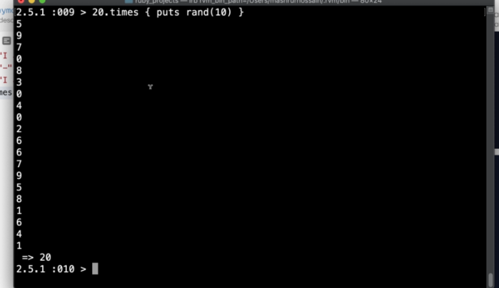

Created viernes 28 diciembre 2018
Los operadores aritmeticos de Ruby nos permiten realizar las operaciones basicas de matematicas como, suma, resta, multiplicación y división ademas del modúlo.
En el siguiente ejemplo, imaginemos tener dos variables:
b = 20
Entonces...
_Trabajando_con_numeros/pasted_image.png)
Ahora otro ejemplo, ademas de poder realizar operaciones matematicas es posible utilizar "atajos" que nos permitan repetir algo.
Si tenemos el siguiente ejemplo de código.
puts "I am a line"
puts "--" * 20
puts "I am a diff line after a divider
Produce lo siguiente:
_Trabajando_con_numeros/pasted_image001.png)
Tambien se puede utilizar times
Por ejemplo 20.times { print "-" } o tambien rand(10) para generar aleatoreamente numeros.
Ó tambien rand(100) esto sirve para generar numeros aleatorios 100 por ejemplo.

Working with numbers - Text with directions, references and code
Sección 2, Clase 27
To add and display the value of 1 + 2:
puts 1 + 2
Different operations:
1 + 2
1 * 2
1 / 2
1 - 2
1 % 2
To indicate a number is a float instead of an integer include a . in the number:
20 is an integer, 20.0 is a float
or
20.to_f
Methods you can use:
object.odd?
22.odd?
object.even?
22.even?
Comparisons:
a == b
1 == 2
3 == 3
5 < 2
2 <= 5
5 > 2
5 && 6
5 || 6
Generate a random number between 0 and less than 10:
rand(10)
To convert an string object to integer:
objectname.to_i
"5".to_i
To convert an object to string:
objectname.to_s
5.to_s